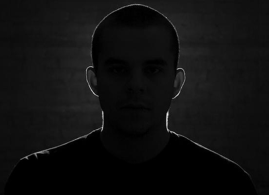

The Artist himself
Marcos Ortega, better known by his stage name Lorn, is an American electronic musician born in Normal, Illinois, but later based out of Milwaukee, Wisconsin. Since Lorn's first release in 2006 his music was played in the UK by Mary Anne Hobbs on BBC Radio and subsequently XFM, he has performed guest mixes several times for her radio shows. Lorn was invited to create a track for the soundtrack of Darren Aronofsky's 2010 film Black Swan, which Mary Anne Hobbs was working on, however the track was not used. Lorn signed with Flying Lotus' label Brainfeeder in 2009, and released his debut album Nothing Else in June 2010, which was mastered by electronic artist Clark. He also received exposure in 2010 with his remix of grime musician Jammer's track "Better Than". He released his second album, Ask The Dust (after the 1939 novel by John Fante), on Ninja Tune in 2012. He worked on the soundtrack of the video game Killzone Shadow Fall with Tyler Bates, which was released in 2014 also on Ninja Tune. Since 2014 he has released two albums, Vessel and A/D, as well as several EPs, on the independent label Wednesday Sound. His music has been used in a number of video games, movies and TV shows, including CSI and Silicon Valley. Lorn has stated that he is influenced by Drexciya, Underground Resistance, Dom & Roland, Technical Itch and Aphex Twin.
Link to his Facebook here
1. Dom Sunday
2. Fank Holiday
3. Cherie Collins
4. Lauren Hill (What no way?!)
Anvil